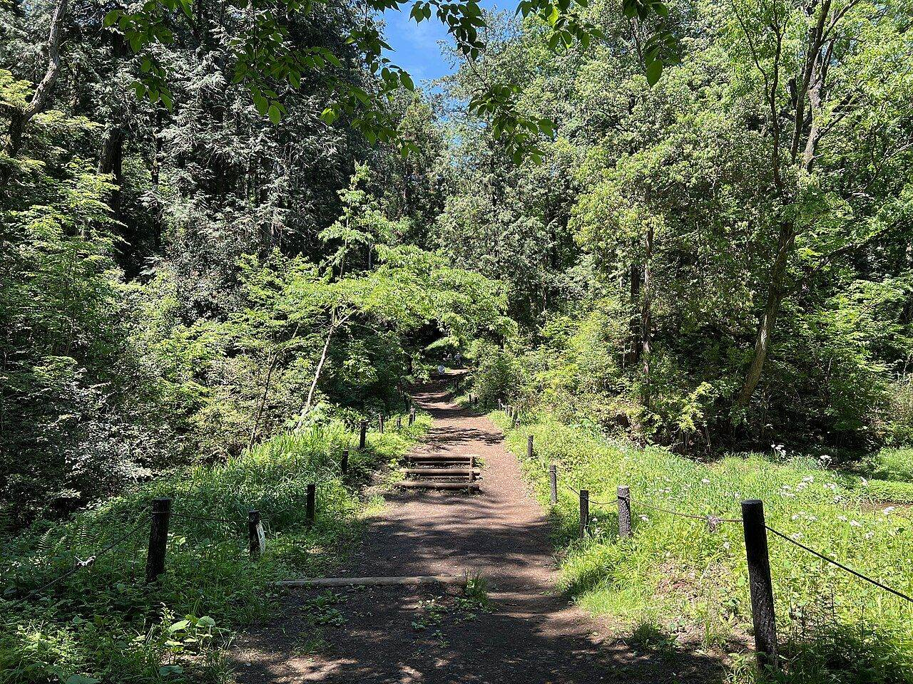
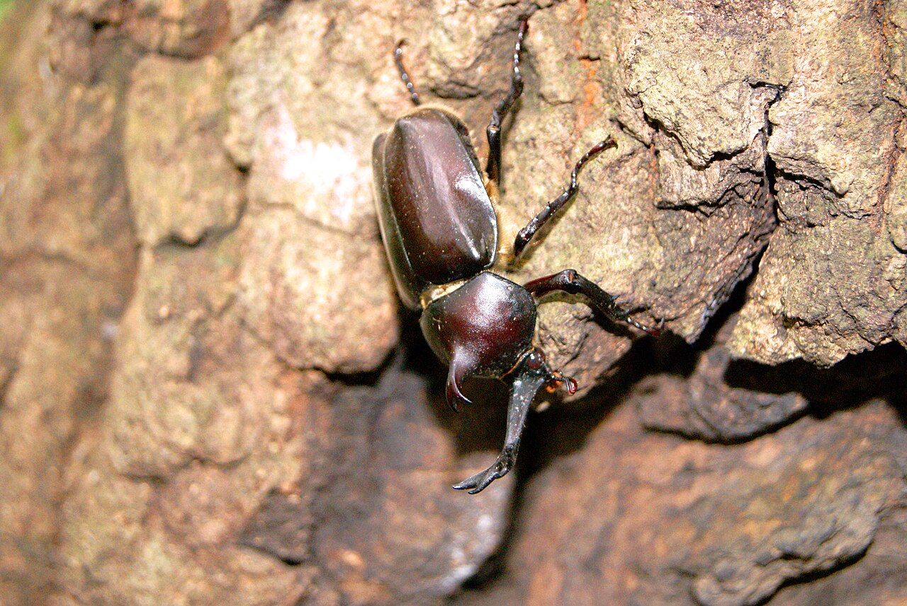
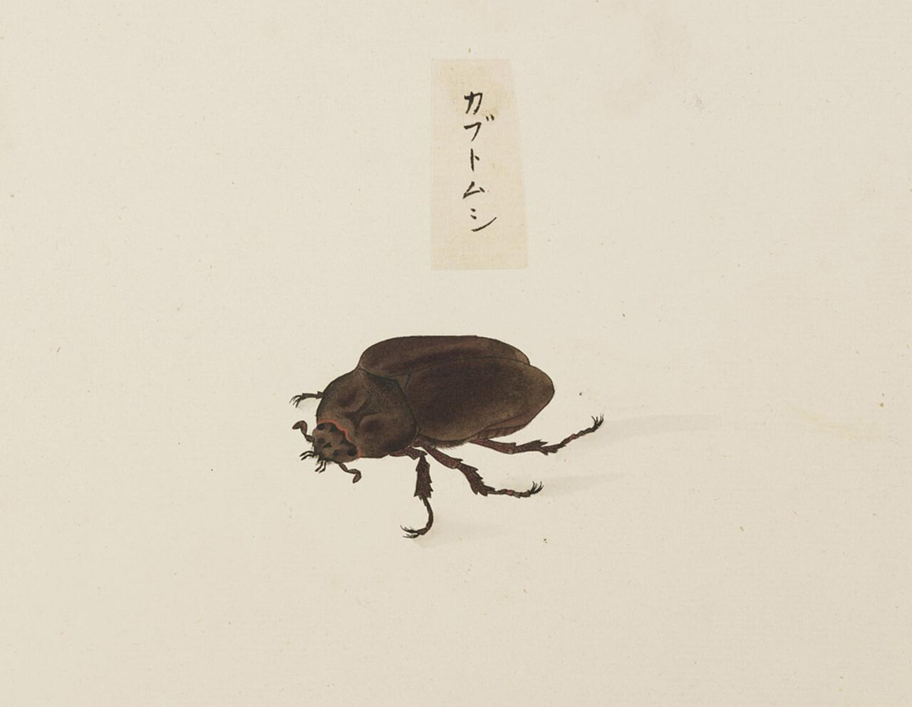
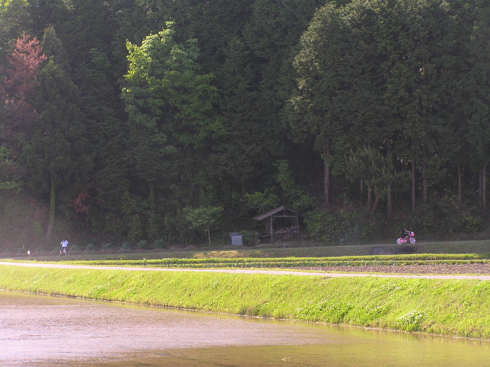
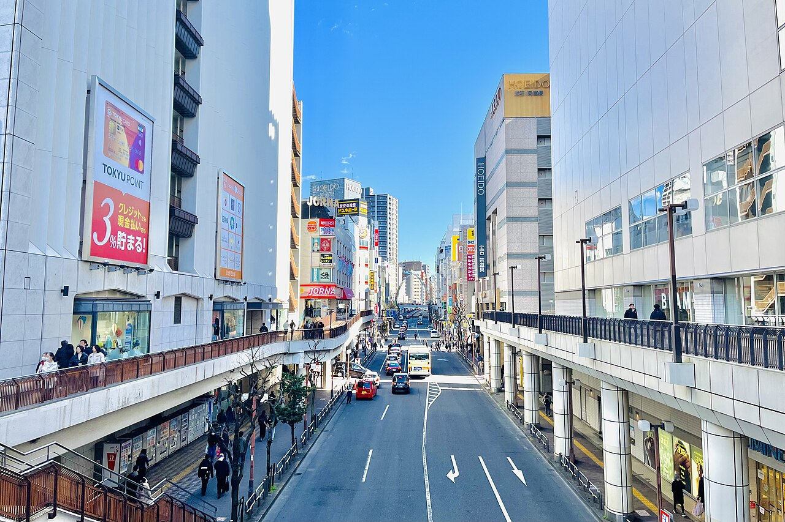
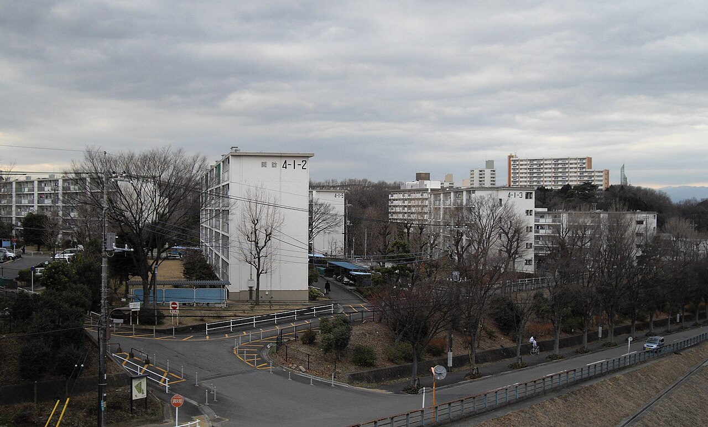
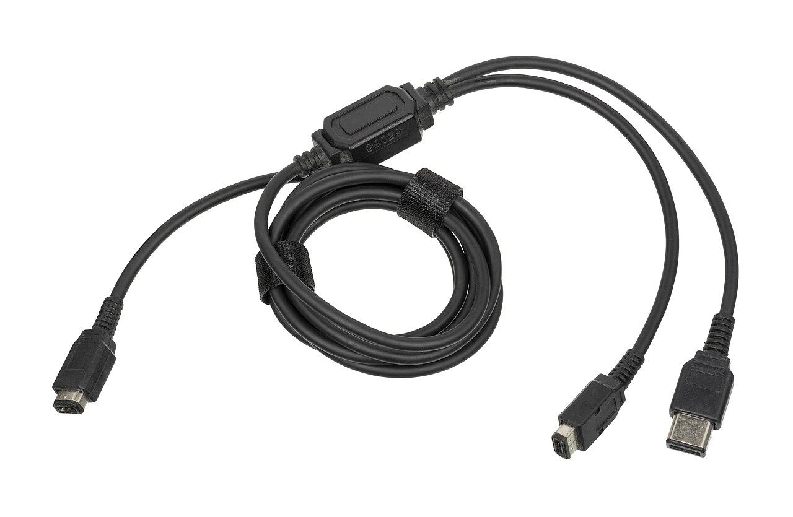
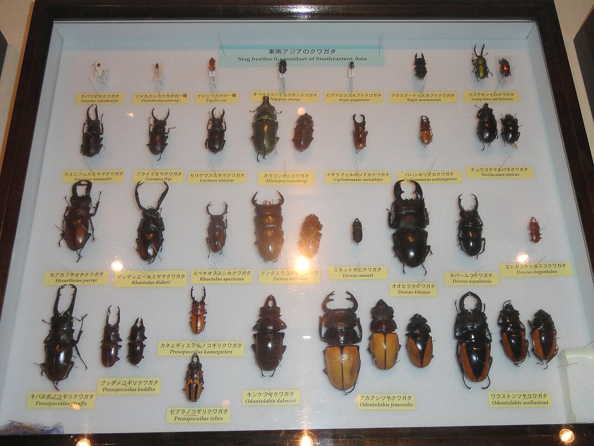

エンタメ Entertainmentポケモンは、どんな遊びから生まれた？
生みの親・田尻智さんが子どものころ夢中になった遊びが、ポケモンのもとになりました。町田市の人口のグラフ、通信ケーブルの模式図、開発の年表をたどりながら、その遊びを探しに行きましょう。あなたも子どものころ、同じ遊びをしていたかもしれません。
2026.11.01 UP 約5分で読める 文：SOMOSOMO編集部
写真（イメージ）：狭山丘陵 虫たちの森／Asanagi（2026年、CC0）
東京、1996年2月27日。任天堂の携帯ゲーム機ゲームボーイ向けに、『ポケットモンスター 赤・緑』が発売されました。ふしぎな生き物を探してつかまえ、育て、友達と交換する。いまでは世界中で知られる「ポケモン」の始まりです。
生みの親は、ゲーム会社ゲームフリークを作った田尻智（たじりさとし）さんです。田尻さんは1999年11月、アメリカの雑誌TIMEのインタビューで、アイデアのもとを語っています。ポケモンは、どんな遊びから生まれたのでしょうか。
In a word
田尻さんが子どものころ夢中になった昆虫採集 だ。
01
Dr. Bug
虫取りの名人は、東京の郊外で育った
田尻さんは1965年に東京の世田谷区で生まれ、少年時代を東京の南西のはずれ、町田市で過ごしました。TIMEのインタビューによれば、当時の町田には田んぼや川や林が残り、まだいなかの雰囲気があったといいます（英語の記事を編集部が要約。以下も同じ）。
田尻さんがのめりこんだのが、昆虫採集でした。木に蜜をぬって虫を集める子が多いなか、自分なりのやり方を工夫して、だれよりも多くつかまえたと振り返っています。虫の変わった動きやふるまいにひかれた、とも語りました。


夏の林の主役、カブトムシ 左は、群馬県の昆虫の森で撮られた、木の幹にとまるオス。右は、江戸時代の長崎の絵師・石崎融思（いしざきゆうし）が描いた角のない姿（メスとみられる）で、札に「カブトムシ」とあります。写真・絵はイメージです。写真：Japanese rhinoceros beetle at Gunma Insect World ／岡部碩道（2010年、パブリックドメイン）、絵：Trypoxylus dichotomus ／石崎融思（19世紀前半、パブリックドメイン、ナチュラリス生物多様性センター）
TIMEの記事では、父親の話として、"Dr. Bug"（虫博士）というあだ名が紹介されています。日本語の資料（畠山・久保『ポケモン・ストーリー』による日本語版Wikipedia）でも、クラスで一番の昆虫博士だったとされます。
つかまえた虫を友達と見せ合い、交換した経験が、のちのゲームのヒントになったともいわれます。

田んぼのすぐ裏に、林がある 水を張った田んぼと林が、あぜ道をはさんで接しています。田尻さんが当時の町田にあったと語る田んぼや川や林は、虫を探す子どもにとって格好の遊び場でした。写真はイメージです。写真：Paddy fields on Japan 20070513 ／松岡明芳（2007年、パブリックドメイン）
02
The Lost Woods
町が大きくなるほど、虫は消えていった
町田市の人口は、1960年の約7万人から、1970年には約20万人へ。わずか10年で3倍近くにふくらみました（国勢調査）。丘陵（なだらかな丘が続く土地）が切り開かれ、東京や横浜に通う人のための住宅地が次々に造られたのです。
Fig.01 町田市の人口の移り変わり
見どころは、1960年から1980年にかけての急な坂。田尻さんの少年時代（1965〜1980年ごろ）と重なる20年で、人口は約7万人から約30万人へ、4倍以上になりました。国勢調査（英語版Wikipedia「Machida, Tokyo」に掲載）をもとに編集部が作図。
1971年には、町田市などにまたがる多摩丘陵で、大きな住宅地「多摩ニュータウン」への入居が始まります。田尻さんの家は多摩ニュータウンではありませんが、同じころ町田でも新しい住宅地が次々に造られ、田尻さんもそうした住宅地で育ちました。


丘の上に、町が広がった 左は、いまの町田駅前の通り。右は、多摩ニュータウンで最初に入居が始まった諏訪・永山地区の団地です。丘陵を造成した土地に、大きな建物が並んでいます。写真はイメージです。写真：Machida city ／かなえゆうじん（2025年、CC0）、Tama new town suwa ／Terebitou（2009年、パブリックドメイン）
田尻さんは、開発が進むにつれて虫がいなくなっていったと振り返ります。子どもたちは家の中で遊ぶようになり、多くが虫取りを忘れてしまった。田尻さん自身もその一人だった、と語っています。
ところが、ゲームを作る仕事を始めてから、田尻さんは忘れていた虫取りを思い出します。それがポケモンの考えのもとになった、と言うのです。
03
The Cable
2台をつなぐケーブルを、生き物が行き来する
1989年4月、任天堂は携帯ゲーム機ゲームボーイを発売しました。そのすぐあと、田尻さんは仲間と株式会社ゲームフリークを設立しています。この社名の由来は、最後にお話しします。
ゲームボーイには、2台を通信ケーブル（データを送り合うための線）でつなぐ差しこみ口がありました。田尻さんはこのケーブルを見て、本物の生き物がケーブルを通って行ったり来たりするようすを思い浮かべたといいます。
田尻さんが考えたのは、相手を負かす対戦だけではありません。2台のあいだで、おたがいに何かを受け渡すやりとりです。

この線の中を、何が通る？ ゲームボーイ用の通信ケーブルです。写っているのはのちの型で、古い本体にも新しい本体にもつなげるよう、先が2つに分かれています。ふつうの人には、ただの黒い線にしか見えなかったはずです。写真：Nintendo Game Boy Link Cable Dual ／Evan-Amos（2017年、パブリックドメイン）
交換をもっと楽しくするため、ソフトは『赤』と『緑』の2本に分けられました。2本では出てくるポケモンが一部ちがい、相手と交換しないと全部はそろいません。自分と相手のカセットがちがうからこそ、交換が成り立つしくみです。
Fig.02 『赤』と『緑』をケーブルでつなぐと
赤
緑
赤だけの種類
緑だけの種類
通信ケーブル
交換しないと、全部はそろわない
見どころは、ケーブルの上の2匹の虫。田尻さんが思い浮かべた、線の中を行き来する生き物を、2本のソフトの交換に重ねて描きました。種類の数や中身は省いた模式図です。編集部が作図。
04
Six Years
6年かけて、151匹がそろった
田尻さんが任天堂に企画を持ちこんだのは、1990年ごろとされます。仮の題は「カプセルモンスター」でした。ところが開発は難航し、ゲームフリークはほかのゲームを作って資金をまかないながら、少しずつ作り進めました。
発売までにかかったのは、最初の構想から約6年。そのあいだに、ポケモンの種類は151匹までそろいました。
Fig.03 虫取り少年から『赤・緑』まで
少年時代と町
ゲームのできごと
1965
田尻智さんが生まれる
世田谷生まれ、町田で育つ
1971
多摩ニュータウン入居開始
丘陵が住宅地に変わっていく
（ここで18年を省略）
1989.4.21
ゲームボーイ発売
2台をつなぐ通信ケーブル
1989.4.26
株式会社ゲームフリーク設立
ゲームボーイ発売の5日後
1990頃
任天堂に企画を持ちこむ
仮の題は「カプセルモンスター」
1996.2
『赤・緑』発売
構想から約6年、151匹
見どころは、18年を省いたあとの赤い点。ゲームボーイ発売の5日後に会社ができ、そこから『赤・緑』の発売までは約6年かかっています。会社の公式サイト、文春オンライン、日本語版Wikipediaなどをもとに編集部が作図。

集めて、並べて、見くらべる 京都大学総合博物館に展示された、東南アジアのクワガタの標本です。1匹ずつ名前の札がつき、あごの形や大きさのちがいが一目でわかります。図鑑を1種類ずつ埋めていく楽しさに、どこか似ています。写真はイメージです。写真：Stag beetles (Lucanidae) of Southeastern Asia ／Daderot（2012年、CC0）
田尻さん自身がはっきり語っているのは、昆虫採集が発想のもとであることと、ケーブルを生き物が行き来するイメージです。つかまえる、持ち歩く、図鑑を埋める──ほかを虫取りと結びつけるのは、ファンや編集部の見立てです。友達と虫を交換した遊びが原点という話は、学習まんがの紹介記事などによるものです。
田尻さんは、虫取りのほかに、ゲームの材料の一つとして「カプセル怪獣」も挙げています。特撮番組『ウルトラセブン』（1967年）で、主人公が小さなカプセルから呼び出す味方の怪獣です。
Fig.04 虫取りとポケモンの対応表
虫取り
ポケモン
野山で探す 草むらで出会う
網でつかまえる ボールでつかまえる
虫かごに入れる ボールで持ち歩く
飼って世話をする 連れて歩いて育てる
標本を集める ポケモン図鑑を埋める
友達と虫を交換する ケーブルで交換する
（本人）ケーブルを生き物が行き来する
林・田んぼ・川 歩くと飛び出してくる
逃げられることも 失敗することも
家に持ち帰る いつでも呼び出せる
えさや住まいを工夫 育てると強くなる
形のちがいをくらべる 種類を1つずつ記録
紹介記事などでの説 2台で交換しあう
1999年のTIMEのインタビューで語った発想
見どころは、下の2行。赤い枠は田尻さん本人が語った発想、点線の行は紹介記事などで言われてきた対応で、上の5行は編集部の見立てです。編集部が作図。
05
By the Numbers
数字で見る『赤・緑』
約 13万本 『赤・緑』の発売初日の出荷本数（2本の合計）。初週の出荷は約23万本。のちに1000万本を超えるソフトとしては、小さな出だしでした日本語版Wikipedia（『ポケモンをつくった男 田尻智』小学館による）、文春オンライン
151匹 『赤・緑』に入ったポケモンの数。ソフトに入れられるデータの量が足りず、開発中は一時100匹以下に減らしていました日本語版Wikipedia（とみさわ昭仁『ゲームフリーク』による）
1023万本 『赤・緑』と、あとから出た改良版『青』の、日本での販売本数の合計（約1023万本）。約13万本は出荷、こちらは店で売れた数ですWikipedia 英語版 Pokémon Red and Blue
Here's the Fun Part
ここが面白い！
TIMEのインタビューで田尻さんは、釣り池がゲームセンターに変わる、といった変化が町に起きたとも語っています。日本語の資料によれば、中学生のころ、近所に宅地やゲームセンターが建ち、田尻さんはそのゲームセンターで『スペースインベーダー』（1978年）に夢中になりました。
やがて田尻さんは、ゲームの情報を手書きでまとめ、ホチキスでとじた雑誌『ゲームフリーク』を作り始めます。いちばん売れたのはシューティングゲーム『ゼビウス』の特別号で、約1万部。この雑誌の名前が、のちに会社の名前になりました。
虫のすみかを減らした町の変化は、田尻さんにゲームセンターという新しい遊び場も運んできたことになります。
ポケモンは、消えていった林と、新しくできたゲームセンターの両方から生まれた──そう読むこともできそうです。
次に草むらのそばを通ったら、少しだけしゃがんで、虫を探してみてください。ポケモンの始まりは、そこにあります。
出典・参考
The Ultimate Game Freak （Tim Larimer、TIME Asia、1999年11月22日。ゲームフリークの事務所での田尻智さんへのインタビュー。記事は英語のみで、記事中の田尻さんの言葉はすべて英語の記事をもとに編集部が要約したもの）：町田は当時まだいなかで、田んぼや川や林があったこと、自分なりの方法で多くの虫をつかまえたこと、開発で虫がいなくなり、子どもが家で遊ぶようになって虫取りを忘れたこと、ゲームボーイを見て通信ケーブルを生き物が行き来するようすを思い浮かべたこと、対戦も好きだが、2台のあいだのやりとりを考えたこと、カプセル怪獣などがゲーム全体の材料になったこと、釣り池がゲームセンターに変わるといった変化の例、手書きの雑誌『ゲームフリーク』と、いちばん売れたゼビウスの特別号が約1万部だったこと、父親の話として紹介された "Dr. Bug" というあだ名Satoshi Tajiri （Wikipedia 英語版）、田尻智 （Wikipedia 日本語版）：1965年8月28日に東京都世田谷区で生まれ、少年時代を町田市で過ごしたこと、クラスで一番の昆虫博士だったこと、中学生のころ開発で宅地やゲームセンターが建ち、そのゲームセンターでインベーダーに夢中になったこと（いずれも日本語版が畠山けんじ・久保雅一『ポケモン・ストーリー』による）、友達との昆虫交換がポケモンのヒントになったとされること、ほかのゲームで資金を集めながら開発したこと。同人誌『ゲームフリーク』の創刊は英語版で1981年、日本語版で1983年とされ、本文では年を書いていないポケモンをつくった男・田尻 智「少年時代の昆虫採集がポケモンの原点」 （HugKum、2021年1月5日。小学館の学習まんが『ポケモンをつくった男 田尻智』からの紹介）：町田市の新興住宅地で育ち、昆虫採集に夢中になったこと、友達との虫の交換を原点とする紹介会社概要 （株式会社ゲームフリーク）：設立は平成元年（1989年）4月26日ご存知ですか？ 2月27日は『ポケモン』が発売された日です （近藤正高、文春オンライン、2017年2月27日）：1990年に田尻さんがゲームボーイの通信機能を使ったゲームを任天堂に提案したこと、開発が一時中断したこと、交換を楽しむためにカセットを2種類にしたこと、初回の出荷を23万本としていることPokémon Red and Blue （Wikipedia 英語版）：昆虫採集と通信ケーブルが発想のもとであること、日本での発売が1996年2月27日であること、『青』が『赤・緑』の改良版であること、『赤・緑・青』の日本での販売が約1023万本であることポケットモンスター 赤・緑 （Wikipedia 日本語版）：2つのバージョンで通信しないと全部そろわないこと、容量のために一時100匹以下に減らし、のちに151匹になったこと（とみさわ昭仁『ゲームフリーク』メディアファクトリー、2000年による）、発売初日の出荷が約13万本、初週が約23万本だったこと（『ポケモンをつくった男 田尻智』小学館による）。仮の題「カプセルモンスター」は日本語版「田尻智」の項によるGame Boy （Wikipedia 英語版）：日本での発売が1989年4月21日であること、通信ケーブルで2台をつなげることUltraseven （Wikipedia 英語版）：『ウルトラセブン』（1967年）で、主人公が小さなカプセルから味方の怪獣「カプセル怪獣」を呼び出すことMachida, Tokyo （Wikipedia 英語版）：国勢調査による人口（1950年5万2486人、1960年7万1269人、1970年20万2499人、1980年29万5405人、1990年34万9050人、2000年37万7494人、2010年42万7016人、2020年43万1079人）、多摩丘陵にあり、東京や横浜に通う人の住宅地になったこと多摩ニュータウン （Wikipedia 日本語版）、Tama New Town （Wikipedia 英語版）：八王子・多摩・稲城・町田の4市にまたがること、1971年3月26日に諏訪・永山地区で入居が始まったことSpace Invaders （Wikipedia 英語版）：1978年に登場したこと写真：Sayama Hill Flora and Fauna Interaction Area 2026-05-05 （狭山丘陵いきものふれあいの里 虫たちの森）／Asanagi（2026年、CC0）。本文中の写真・絵のクレジットは、それぞれの下に記しています（いずれも CC0 またはパブリックドメイン）。ゲームの画面やキャラクターの画像は使っていません